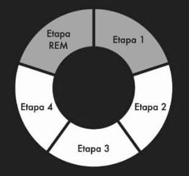

¿Sabías que existen 5 fases del sueño?
La fluctuación de los estados de sueño permite que el cuerpo se recupere y se renueve de la vigilia previa, lo que permite al individuo despertarse sintiéndose fresco y alerta.
- Esta fase entre la vigilia y el sueño se caracteriza por un sueño muy ligero que dura muy pocos minutos. Se puede despertar con facilidad. Y se puede experimentar la sensación de estar cayendo.
- En esta etapa ocurre una relajación progresiva de los músculos, las ondas cerebrales se vuelven más lentas, los ojos dejan de moverse. Tiene una duración aproximada de 10 a 20 minutos.
- Implica las etapas iniciales de sueño profundo. Los músculos están completamente relajados. Es difícil despertar a la persona y raramente se mueve. Dura aproximadamente entre 15 a 30 minutos.
- Fase de sueño más profundo donde el cuerpo se recupera tanto física como mentalmente. Es muy difícil despertar a la persona. Dura entre 15 a 30 minutos.
- Etapa REM (Rapid eye movement).En esta etapa no hay tono muscular, se desarrollan los sueños. Los ojos se mueven constantemente, hay fluctuación en la frecuencia cardiaca y respiratoria y de la tensión arterial. Se describe como un cerebro activo y alucinante en un cuerpo paralizado.
¿Sabes cuáles son las horas de sueño recomendadas para un deportista?
Entre 7 – 9 horas aproximadamente.
Dependiendo de: Tipo de deporte, iIntensidad, carga y frecuencia de entrenamiento(Taylor et al., 2015).
¿Cuando despertar?
Es mejor despertar en la parte final de la etapa REM o al inicio de la etapa 1

Imagen tomada de: Google imagenes
¿Cuando no despertar?
No se debe despertar en la etapa 3 o 4
Imagen tomada de: Google imagenes